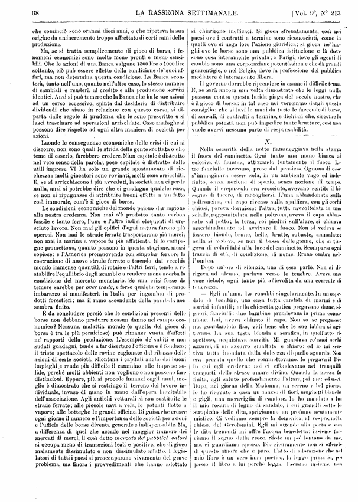
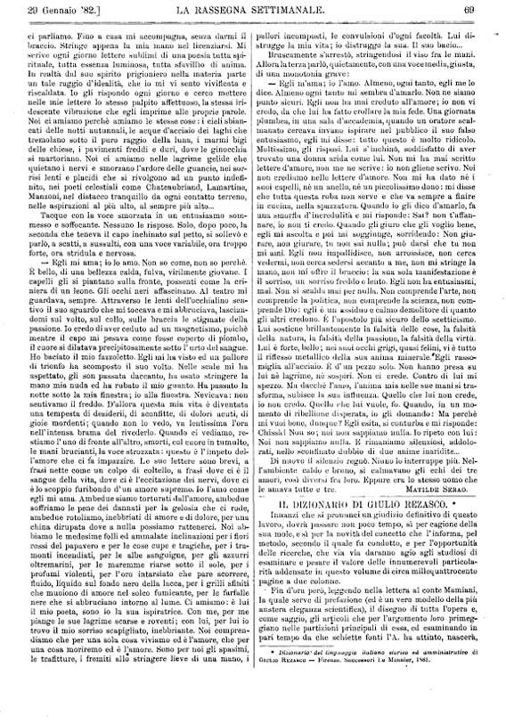
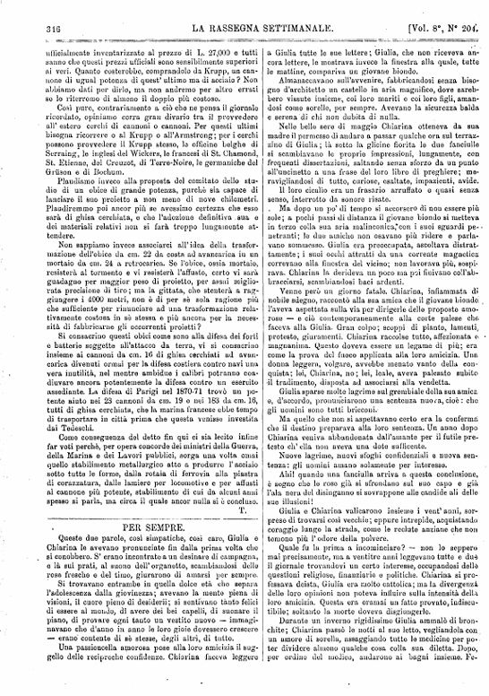
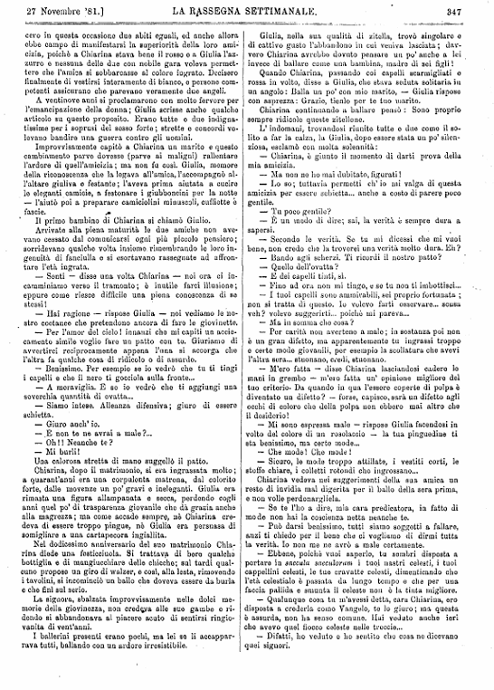
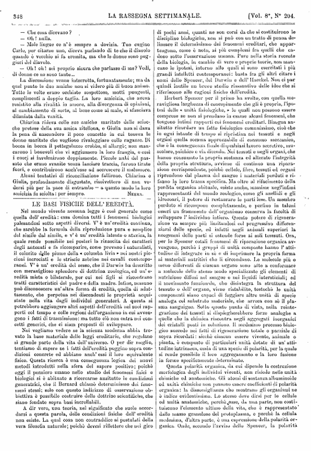
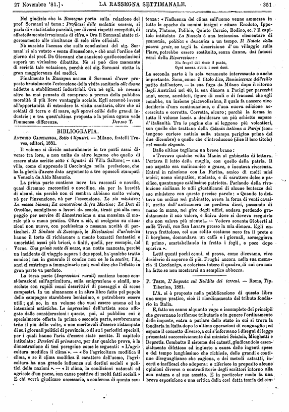
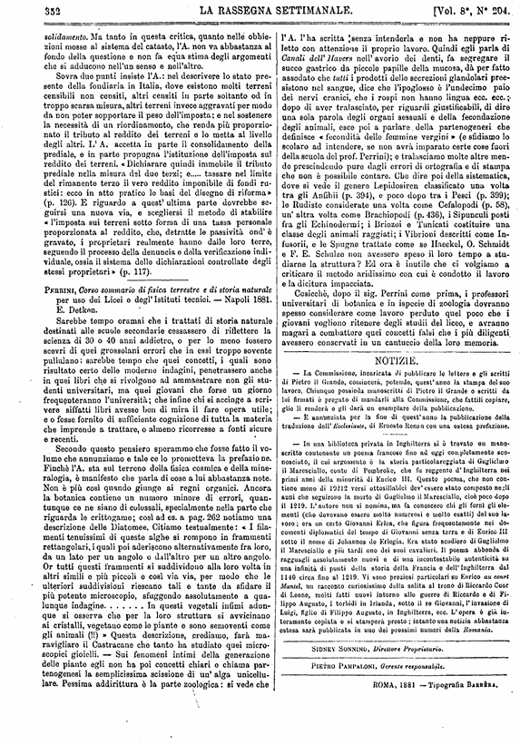

X
Nella oscurità della notte fiammeggiava nella stanza
il fuoco del caminetto. Ogni tanto una mano bianca si
coloriva di fiamma, attizzando lentamente il fuoco. Le
tre fanciulle tacevano, prese dal pensiero. Ognuna di esse
s’immaginava essere sola, in un ambiente vago ed inde-
finito, senza nozione di spazio, senza nozione di tempo.
Quando il crepuscolo era cresciuto, avevano sentito il bi-
sogno di tacere, di raccogliersi. L’una abbandonata sulla
poltroncina, col capo riverso sulla spalliera, con gli occhi
chiusi, pareva dormisse; l’altra, tutta ravvoltolata in uno
scialle, raggomitolata nella poltrona, aveva il capo abbas-
sato sul petto ; la terza, coi piedini sull’alare, si chinava
macchinalmente ad avvivare il fuoco. Non si vedeva se
fossero bionde, brune, belle, brutte, robuste, ammalate;
nulla si vedeva, se non il basso delle gonne, che si tin-
geva di colori falsi alla luce del caminetto. Scomparsa ogni
traccia di età, di condizione, di nome. Erano ombre nel-
l’ombra.
Dopo un’ora di silenzio, una di esse parlò. Non si di-
rigeva ad alcuno, parlava verso le tenebre. Aveva una
voce debole, ogni tanto più affievolita da una corrente di
tenerezza.
— Egli m’ama. Lo conobbi singolarmente. In un’ ospe-
dale di bambini, una casa tutta candida di marmi e di
sorrisi infantili; nella chiesetta gotica pregavano dame, si-
gnori, fanciulli: due bambine prendevano la prima comu-
nione. Lui, aveva chinato il capo. Non so se pregasse:
ma guardandolo fisso, vidi bene che le sue labbra si agi-
tavano. La sua testa bionda e serafica, in quell’atto ri-
spettoso, acquistava soavità. Mi guardava co’suoi occhi
azzurri, di un azzurro smaltato e chiaro: ed io mi sen-
tiva tutta inondata dalla dolcezza di quello sguardo. Non
era peccato quello che commettevamo. Io pregava il Dio
in cui egli credeva: noi ci effondevamo nei tranquilli
trasporti dello stesso amore divino. Quando la messa fu
finita, egli salutò profondamente l’altare, poi me: ed uscì.
Dopo, nel giorno della Madonna, un sereno e bel giorno,
io ho ricevuto a casa un mazzo di fiori, mughetti bianchi
e gigli, una meraviglia di candore. Io ho mandato a lui
il mio rosario di legno di sandalo, i cui granelli sotto lo
stropiccio delle dita, sprigionano un profumo acutamente
mistico. Ci vediamo sempre la domenica, al vespro, nella
chiesa dei Gerolomini. Egli mi attende alla porta e con
le dita tremanti mi olire l’acqua benedetta; insieme fac-
ciamo il segno della croce. Siede un po’ lontano da me,
ma ci guardiamo spesso. Dio sicuramente non si offende
di questo amore che è puro. L’atto di adorazione che nel
mio libro è un vero inno poetico, lo leggo prima io, poi
passo il libro a lui perché legga. Usciamo insieme, non

ci parliamo. Fino a casa mi accompagna, senza darmi il
braccio. Stringe appena la mia mano nel licenziarsi. Mi
scrive ogni giorno lettere sublimi di una poesia tutta spi-
rituale, tutta essenza luminosa, tutta sfavillio di anima.
In realtà dal suo spirito prigioniero nella materia parte
un tale raggio d’idealità, che io mi vi sento vivificata e
riscaldata. Io gli rispondo ogni giorno e cerco mettere
nelle mie lettere lo stesso palpito affettuoso, la stessa iri-
descente vibrazione che egli imprime alle proprie parole.
Noi ci amiamo perchè amiamo le stesse cose : i cieli sbian-
cati delle notti autunnali, le acque d’acciaio dei laghi che
tremolano sotto il puro raggio della luna, i marmi bigi
delle chiese, i pavimenti freddi e duri, dove le ginocchia
si martoriano. Noi ci amiamo nelle lagrime gelide che
quietano i nervi e smorzano l’ardore delle guancie, nei sor-
risi lenti e placidi che si rivolgono ad un punto indefi-
nito, nei poeti celestiali come Chateaubriand, Lamartine,
Manzoni, nel distacco tranquillo da ogni contatto terreno,
nelle aspirazioni al più alto, al sempre più alto...
Tacque con la voce smorzata in un entusiasmo som-
messo e soffocante. Nessuno le rispose. Solo, dopo poco, la
seconda che teneva il capo inchinato sul petto, si sollevò e
parlò, a scatti, a sussulti, con una voce variabile, ora troppo
forte, ora stridula e nervosa.
— Egli mi ama; io lo amo. Non so come, non so perchè.
È bello, di una bellezza calda, fulva, virilmente giovane. I
capelli gli si piantano sulla fronte, possenti come la cri-
niera di un leone. Gli occhi neri affascinano. Al teatro mi
guardava, sempre. Attraverso le lenti dell’occhialino sen-
tivo il suo sguardo che mi toccava e mi abbruciava, lascian-
domi sul volto, sul collo, sulle braccia le stigmate della
passione. Io credo di aver ceduto ad un magnetismo, poiché
mentre il capo mi pesava come fosse coperto di piombo,
il cuore si dilatava precipitosamente sotto l’urto del sangue.
Ho baciato il mio fazzoletto. Egli mi ha visto ed un pallore
di trionfo ha scomposto il suo volto. Nelle scale mi ha
aspettato, gli son passata daccanto, ha osato stringere la
mano mia nuda ed ha rubato il mio guanto. Ha passato la
notte sotto la mia finestra; io alla finestra. Nevicava: non
sentivamo il freddo. D’allora questa mia vita è diventata
una tempesta di desiderii, di sconfitte, di dolori acuti, di
gioie mordenti; quando non lo vedo, va lentissima l’ora
nell’intensa brama del rivederlo. Quando ci vediamo, re-
stiamo l’uno di fronte all’altro, smorti, col cuore in tumulto,
le mani brucianti, la voce strozzata: questo è l’impeto del-
l’amore che ci fa impazzire. Le sue lettere sono brevi, a
frasi nette come un colpo di coltello, a frasi dove ci è il
sangue della vita, dove ci è l’eccitazione dei nervi, dove ci
è lo scoppio furibondo d’un amore supremo. Io l’amo come
egli mi ama. Ambedue siamo torturati dall’amore, ambedue
soffriamo le pene dei dannati per la gelosia che ci rode,
ambedue rotoliamo, inebbriati di amore e di dolore, per una
china dirupata dove a nulla possiamo rattenerci. Noi ab-
biamo le medesime folli ed ammalate inclinazioni per i fiori
rossi del papavero e per le cose cupe e tragiche, per i tra-
monti incendiati, per le albe sanguigne, per gli azzurri
oltremarini, per le maremme riarse sotto il sole, per i
profumi violenti, per l’oro intarsiato che pare scorrere,
fluido, liquido sul fondo nero della lacca, per i grilli sfiniti
che muoiono di amore nel solco fumicante, per le farfalle
nere che si abbruciano intorno al lume. Ci amiamo: è lui
il mio poeta, sono io la sua ispiratrice. Con me, per me
piange le sue lagrime scarse e roventi; con lui, per lui io
trovo il mio sorriso scapigliato, inebbriante. Noi compren-
diamo che per una sola cosa viviamo ed è l’amore, che per
una cosa moriremo ed è l’amore. Sono per noi gli spasimi,
le trafitture, i fremiti allo stringere lieve di una mano, i
pallori incomposti, le convulsioni d’ogni facoltà. Lui di-
strugge la mia vita; io distruggo la sua. Il suo bacio...
Bruscamente s’arrestò, stringendosi il viso fra le mani.
Allora la terza parlò, quietamente, con una voce media, giusta,
di una monotonia grave :
— Egli m’ama; io l’amo. Almeno, ogni tanto, egli me lo
dice. Almeno ogni tanto mi sembra d’amarlo. Non ne siamo
punto sicuri. Egli non ha mai creduto all’amore; io non vi
credo, da che lui ha fatto crollare la mia fede. Una giornata
plumbea, in una sala d’accademia, quando un oratore scal-
manato cercava invano ispirare nel pubblico il suo falso
entusiasmo, egli mi disse: tutto questo è molto ridicolo.
Moltissimo, gli risposi. Lui s’inchinò, soddisfatto di aver
trovato una donna arida come lui. Non mi ha mai scritto
lettere d’amore, non me ne scrive : io non gliene scrivo. Noi
non crediamo nelle lettere d’amore. Non mi ha dato nè i
suoi capelli, nè un anello, nè un piccolissimo dono: mi disse
che tutta questa roba non serve e che va sempre a finire
in cucina, nella spazzatura. Quando io gli dico d’amarlo, fa
una smorfia d’incredulità e mi risponde: Sai? non t’affan-
nare, io non ti credo. Quando gli giuro che gli voglio bene,
egli mi ascolta e poi mi soggiunge, sorridendo : Non giu-
rare, non giurare, tu non sai nulla; può darsi che tu non
mi ami. Egli non impallidisce, non arrossisce, non cerca
vedermi, non cerca sedersi accanto a me, non mi stringe la
mano, non mi offre il braccio: la sua sola manifestazione è
il sorriso, un sorriso freddo e lento. Egli non ha entusiasmi,
mai. Non si scalda mai per nulla. Non comprende l’arte, non
comprende la politica, non comprende la scienza, non com-
prende Dio: egli è un assiduo e calmo demolitore di quanto
gli altri credono. È l’apostolo più sicuro dello scetticismo.
Lui sostiene brillantemente la falsità delle cose, la falsità
della natura, la falsità della passione, la falsità della virtù.
Lui è forte, bello ; nei suoi occhi grigi, quasi felini, vi è tutto
il riflesso metallico della sua anima minerale. Egli rasso-
miglia all’acciaio. È d’un pezzo solo. Non hanno presa su
lui nè lagrime, nè sospiri. Non ci crede. Contro di lui mi
spezzo. Ma dacché l’amo, l’anima mia nelle sue mani si tra-
sforma, subisce la sua influenza. Quello che lui non crede,
io non credo. Quello che lui vuole, fo. Quando, in un mo-
mento di ribellione disperata, io gli domando: Ma perchè
mi vuoi bene, dunque? Egli esita, si conturba e mi risponde:
Chissà! Non so; noi non sappiamo nulla. Io ripeto con lui:
Noi non sappiamo nulla. E rimaniamo silenziosi, addolo-
rati, nello sconfinato dubbio di due anime inaridite...
Di nuovo il silenzio regnò. Niuno lo interruppe più. Nel-
l’ambiente caldo e bruno, si calmavano gli echi dei tre
amori, così diversi fra loro. Eppure era lo stesso uomo che
le amava tutte e tre.

PER SEMPRE
Queste due parole, così simpatiche, così care, Giulia e
Chiarina le avevano pronunciate fin dalla prima volta che
si conobbero. S’ erano incontrate a un desinare di campagna,
e là sui prati, al suono dell’ organetto, scambiandosi delle
rose fresche e del timo, giurarono di amarsi per sempre.
Si trovavano entrambe in quella dolce età che separa
l’adolescenza dalla giovinezza; avevano la mente piena di
visioni, il cuore pieno di desiderii; si sentivano tanto felici
di essere al mondo, di avere dei bei capelli, di suonare il
piano, di provare ogni tanto un vestito nuovo — immagi-
navano che d’anno in anno le loro gioie dovessero crescere
— erano’ contente di sè stesse, degli altri, di tutto.
Una passioncella amorosa pose alla loro amicizia il sug-
gello delle reciproche confidenze. Chiarina faceva leggere
a Giulia tutto le sue lettere; Giulia, che non riceveva an-
cora lettere, le mostrava invece la finestra alla quale, tutte
le mattine, compariva un giovane biondo.
Almanaccavano sull’avvenire, fabbricandosi senza biso-
gno d’architetto un castello in aria magnifico, dove sareb-
bero vissute insieme, coi loro mariti e coi loro figli, aman-
dosi come sorelle, per sempre. Avevano la sicurezza balda
e serena di chi non dubita di nulla.
Nelle belle sere di maggio Chiarina otteneva da sua
madre il permesso di andare a passar qualche ora sul terraz-
zino di Giulia ; là sotto la glicine fiorita le due fanciulle
si scambiavano le proprie impressioni, lungamente, con
frequenti dissertazioni, saltando senza sforzo da un punto
all’uncinetto a una frase del loro libro di preghiere; me-
ravigliandosi di tutto, curiose, esaltate, impazienti, avide.
Il loro cicalio era un frasario arruffato o quasi senza
senso, interrotto da sonore risate.
Ma dopo un po’ di tempo si accorsero di non essere più
sole; a pochi passi di distanza il giovane biondo si metteva
in terzo colla sua aria malinconica, con i suoi sguardi pe-
netranti; le due amiche non osavano più ridere e parla-
vano sommesso. Giulia era preoccupata, ascoltava distrat-
tamente ; i suoi occhi attratti da una corrente magnetica
correvano alla finestra del vicino; non lavorava più, sospi-
rava. Chiarina la derideva un poco ma poi finivano coll’ab-
bracciarsi, scambiandosi baci ardenti.
Venne però un giorno fatale. Chiarina, infiammata dì
nobile sdegno, raccontò alla sua amica che il giovane biondo
l’aveva aspettata sulla via per dirigerle delle proposte amo
rose — e ciò contemporaneamente alla corte palese che
faceva alla Giulia. Gran colpo; scoppi di pianto, lamenti,
proteste, giuramenti. Chiarina raccolse tutto, affezionata e
magnanima. Questo doveva essere un legame di più; era
come la prova del fuoco applicata alla loro amicizia. Una
donna leggera, volgare, avvebbe menato vanto della con-
quista; lei, Chiarina, no; lei, leale, aveva palesato subito
il tradimento, disposta ad associarsi alla vendetta.
Giulia sparse molte lagrime sul grembiale della sua amica
e, d’accordo, pronunciarono una sentenza nuova, cioè: che
gli uomini sono tutti bricconi.
Ma quello che non si aspettavano certo era la conferma
che il destino preparava alla loro sentenza. Un anno dopo
Chiarina veniva abbandonata dall’amante per il futile pre-
testo eh’ ella non aveva una dote sufficente.
Nuove lagrime, nuovi sfoghi confidenziali e nuova sen-
tenza: gli uomini amano solamente per interesse.
Ahi! quando una fanciulla arriva a questa conclusione,
è segno che le rose già si sfrondano sul suo capo e già
l’ala nera del disinganno si sovrappone alle candide ali delle
sue illusioni!
Giulia o Chiarina valicarono insieme i vent’ anni, sor-
prese di trovarsi così vecchie; eppure intrepide, acquistando
coraggio lungo la strada, come le reclute anziane che non
temono più 1’ odore della polvere.
Quale fu la prima a incominciare? — non lo seppero
mai precisamente, ma a ventitré anni leggevano tutte e due
il giornale trovandovi un certo interesse, occupandosi delle
questioni religiose, finanziarie o politiche. Chiarina si pro-
fessava deista, Giulia era molto cattolica; ma la divergenza
delle loro opinioni non poteva influire sulla intensità della
loro amicizia. Questa era oramai un fatto provato, indiscu-
tibile; soltanto la morte doveva disgiungerle.
Durante un inverno rigidissimo Giulia ammalò di bron-
chite; Chiarina passò le notti al suo letto, vegliandola con
un amore di sorella, assaggiando tutte le medicine per po-
ter dividere almeno qualche cosa colla sua diletta. Dopo,
por ordino del medico, andarono ai bagni insieme. Fe-

cero in questa occasione due abiti eguali, ed anche allora
ebbe campo di manifestarsi la superiorità della loro ami-
cizia, poiché a Chiarina stava bene il rosso e a Giulia l’ az-
zurro e nessuna delle due con nobile gara voleva permet-
tere che l’amica si sobbarcasse al colore ingrato. Decisero
finalmente di vestirsi interamente di bianco, e persone com-
petenti assicurano che parevano veramente due angeli.
A ventinove anni si proclamarono con molto fervore per
l’emancipazione della donna; Giulia scrisse anche qualche
articolo su questo proposito. Erano tutte o due indigna-
tissime per i soprusi del sesso forte ; strette e concordi vo-
levano bandire una guerra contro gli uomini.
Improvvisamente capitò a Chiarina un marito e questo
cambiamento parve dovesse (parve ai maligni) rallentare
l’ardore di quell’amicizia; ma non fu così. Giulia, memore
della riconoscenza che la legava all’amica, l’accompagnò al-
l’altare giuliva e festante ; l’aveva prima aiutata a cucire
le eleganti camicie, a festonare i giubboncini per la notte
— l’aiutò poi a preparare camiciolini minuscoli, cuffiette e
fascie.
Il primo bambino di Chiarina si chiamò Giulio.
Arrivate alla piena maturità le due amiche non ave-
vano cessato dal comunicarsi ogni più piccolo pensiero;
sorridevano qualche volta insieme, rimembrando le loro in-
genuità di fanciulla e si esortavano rassegnate ad affron-
tare l’età ingrata.
— Senti — disse una volta Chiarina — noi ora ci in-
camminiamo verso il tramonto; è inutile farci illusione;
eppure come riesce difficile una piena conoscenza di se
stessi!
— Hai ragione — rispose Giulia — noi vediamo le no-
stro coetanee che pretendono ancora di fare le giovinette.
— Per l’amor del cielo! innanzi che mi capiti un accie-
camento simile voglio fare un patto con te. Giuriamo di
avvertirci reciprocamente appena l’una si accorga che
l’altra fa qualche cosa di ridicolo o di assurdo.
— Benissimo. Per esempio se io vedrò che tu ti tingi
i capelli e che il nero ti gocciola sulla fronte...
— A meraviglia. E se io vedrò che ti aggiungi una
soverchia quantità di ovatta...
— Siamo intese. Alleanza difensiva; giuro di essere
schietta.
— Giuro auch’ io.
— E non te ne avrai a male ?...
— Oh ! ! Neanche te ?
— Mi burli !
Una calorosa stretta di mano suggellò il patto.
Chiarina, dopo il matrimonio, si era ingrassata molto ;
a quarant’anni era una corpulenta matrona, dal colorito
forte, dalle movenze un po’ gravi e ineleganti. Giulia era
rimasta una figura allampanata e secca, perdendo cogli
anni quel po’ di trasparenza giovanile che dà grazia anche
alla magrezza; ma come accade sempre, nè Chiarina cre-
deva di essere troppo pingue, nè Giulia era persuasa di
somigliare a una cartapecora ingiallita.
Nel dodicesimo anniversario del suo matrimonio Chia-
rina diede unu festicciuola. Si trattava di bere qualche
bottiglia e di mangiucchiare delle chicche; sul tardi qual-
cuno propose un giro di walzer, e così, alla lesta, rimovendo
i tavolini, si incominciò un ballo che doveva essere da burla
e che finì sul serio.
La signora, sbalzata improvvisamente nelle dolci me-
morie della giovinezza, non credeva alle sue gambe e ri-
dondo si abbandonava al piacere acuto di sentirsi ringio-
vanita di vent’anni.
I ballerini presenti erano pochi, ma lei se li accappar-
rava tutti, ballando con un ardore irresistibile.
Giulia, nella sua qualità di zitella, trovò singolare o
di cattivo gusto l’abbandono in cui veniva lasciata ; dav-
vero Chiarina avrebbe dovuto pensare un po’ anche a lei
invece di ballare come una bambina, madre di sei figli !
Quando Chiarina, passando coi capelli scarmigliati e
rossa in volto, disse a Giulia, che stava seduta solitaria in
un angolo : Balla un po’ con mio marito, — Giulia rispose
con asprezza: Grazie, tienlo per te tuo marito.
Chiarina continuando a ballare pensò : Sono proprio
sempre ridicole queste zitellone.
L’indomani, trovandosi riunite tutte e due come il so-
lito a far la calza, la Giulia, dopo essere stata un po’ silen-
ziosa, esclamò con molta solennità:
— Chiarina, è giunto il momento di darti prova della
mia amicizia.
— Ma non ne ho mai dubitato, figurati !
— Lo so; tuttavia permetti ch’io mi valga di questa
amicizia per essere schietta... anche a costo di parere poco
gentile.
— Tu poco gentile?
— È un modo di dire; sai, la verità è sempre dura a
sapersi.
— Secondo le verità. Se tu mi dicessi che mi vuoi
bene, non credo che la troverei una verità molto dura. Eh?
— Bando agli scherzi. Ti ricordi il nostro patto?
— Quello dell’ovatta?
— E dei capelli tinti, sì.
— Fino ad ora non mi tingo, e se tu nou ti imbottisci...
— I tuoi capelli seno ammirabili, sei proprio fortunata ;
non si tratta di questo. Io volevo farti osservare... scusa
veh? volevo suggerirti... poiché mi pareva...
— Ma in somma che cosa ?
— Per carità non avertene a male ; in sostanza poi non
è un gran difetto, ma apparentemente tu ingrassi troppo
e certe mode giovanili, per esempio la scollatura che avevi
l’altra sera... stuonano, credi, stuonano.
— M’ero fatta — disse Chiarina lasciandosi cadere le
mani in grembo — m’ero fatta un’ opinione migliore del
tuo criterio- Da quando in qua l’essere coperte di polpa è
diventato un difetto? — forse, capisco, sarà un difetto agli
occhi di coloro che della polpa non ebbero mai altro che
il desiderio!
— Mi sono espressa male — rispose Giulia facendosi in
volto del colore di un rosolaccio — la tua pinguedine ti
sta benissimo, ma certe mode...
— Che mode ! Che mode !
— Sicuro, le modo troppo attillate, i vestiti corti, le
stoffe chiare, i colletti rotondi che ingrossano...
Chiarina vedeva nei suggerimenti della sua amica un
resto di invidia mal digerita per il ballo della sera prima,
e non volle perdonargliela.
— Se te l’ho a dire, mia cara predicatora, in fatto di
mode non hai la coscienza netta neanche te.
— Può darsi benissimo, tutti siamo soggetti a fallare,
anzi ti chiedo per il bene che ci vogliamo di dirmi tutta
la verità. Io non me ne avrò a male certamente.
— Ebbene, poiché vuoi saperlo, tu sembri disposta a
portare in saecula saeculorum i tuoi nastri celesti, i tuoi
cappellini celesti, le tue cravatte celesti, dimenticando che
l’età celestiale è passata da lungo tempo e che per una
faccia pallida e smunta il celeste non è la tinta migliore.
— Qualunque cosa tu m’avessi detta, cara Chiarina, ero
disposta a crederla come Vangelo, te lo giuro; ma questa
è assurda, non ha senso comune. Hai veduto anche ieri
che avevo quel fiocco celeste nelle treccie...
— Difatti, ho veduto o ho sentito che cosa ne dicevano
quei signori.

— Che cosa dicevano ?
— Oh ! nulla.
— Male lingue ce n’ è sempre a dovizia. Tuo cugino
Carlo, per citarne uno, diceva parlando di te che il diavolo
quando è vecchio si fa eremita, ma che lo donne sono peg-
giori del diavolo.
— Oh! oh! sei proprio sicura che parlasse di me? Vedi,
di donne ce no sono tante...
La discussione venne interrotta, fortunatamente; ma da
quel punto le due amiche non si videro più di buon animo.
Tutte le volte erano occhiate sospettose, motti pungenti,
complimenti a doppio taglio. La loro amicizia, che aveva
resistito alla rivalità in amore, alla divergenza di opinioni,
al cambiamento di sorte, al bene come al male, si sfasciava
dilaniata dalla vanità.
Chiarina rideva colle sue amiche maritate delle scioc-
che pretese della sua amica zitellona, e Giulia non si dava
la pena di nascondere il poco concetto in cui teneva le
donne maritate che vogliono rivaleggiare colle ragazze. Di
bocca in bocca il pettegolezzo crebbe, si allargò; non man-
carono i benevoli che vi aggiunsero la loro frangia, e così
i cuori si invelenirono doppiamente. Piccole nubi del pas-
sato che erano svanite senza lasciare traccia, furono tirate
fuori, e contribuirono auch’esse ad accrescere il malumore.
Alcuni tentativi di riconciliazione fallirono. Chiarina e
Giulia, profondamente disgustate, risolvettero di non ve-
dersi più per la pace di entrambe — a questo modo la loro
amicizia fu sciolta : per sempre.

P.Tesio, L’Imposta sul Reddito dei terreni. — Roma, Tip.
Tiberina, 1881.
L’A. si è proposto nella pubblicazione di questo libro
uno scopo pratico, cioè il riordinamento del tributo fondia-
rio in Italia.
E, fatto un cenno alquanto vago e incompleto dei principii
che governano le riforme tributarie e in genere l’ordinamento
delle imposte, entra a parlare dello stato in cui si trova la
fondiaria in Italia dopo le ultime operazioni di conguaglio ; ed
espone il concetto diverso, a cui s’informano i disegni di legge
presentati successivamente dai ministri Scialoia, Minghetti e
Depretis. Combatte il sistema dei catasti, giudicandolo essen-
zialmente difettoso ed ingiusto a causa delle ingenti spese
e del tempo lunghissimo che richiede, delle grandi e conti-
nue diseguaglianze che cagiona, e dei metodi astratti, in-
certi e inefficaci che adopera; e riferisce in proposito alcune
opinioni diverse o contradittorie degli scrittori intorno alla
sua natura e al suo assetto. E in particolar modo fa una
breve esposizione e una critica della così detta teoria del con-

solidamento. Ma tanto in questa critica, quanto nelle obbie-
zioni mosse al sistema del catasto, l'A. non va abbastanza al
fondo della questione e non fa equa stima degli argomenti
che si adducono nell’un senso e nell’altro.
Sovra due punti insiste l’A.: nel descrivere lo stato pre-
sente della fondiaria in Italia, dove esistono molti terreni
censibili non censiti, altri censiti in parte soltanto od in
troppo scarsa misura, altri terreni invece aggravati per modo
da non poter sopportare il peso dell’imposta: e nel sostenere
la necessità di un riordinamento, che renda più proporzio-
nato il tributo al reddito dei terreni e lo metta al livello
degli altri. L’ A. accetta in parte il consolidamento della
prediale, e in parte propugna l’istituzione dell’imposta sul
reddito dei terreni. «Dichiarare quindi immobile il tributo
prediale nella misura del due terzi; e.... tassare nel limite
del rimanente terzo il vero reddito imponibile di fondi ru-
stici: ecco in atto pratico lo basi del disegno di riforma»
(p. 126). E riguardo a quest’ ultima parte dovrebbe se-
guirsi una nuova via, e scegliersi il metodo di stabilire
« l’imposta sui terreni sotto forma di una tassa personale
proporzionata al reddito, che, detratte le passività ond’ è
gravato, i proprietari realmente hanno dalle loro terre,
seguendo il processo della denuncia e della verificazione indi-
viduale, ossia il sistema dello dichiarazioni controllate degli
stessi proprietari» (p. 117).
Perrini, Corso sommario di fisica terrestre e di storia naturale
per uso dei Licei e degl’ Istituti tecnici. — Napoli 1881.
E. Detken.
Sarebbe tempo oramai che i trattati di storia naturale
destinati alle scuole secondarie cessassero di riflettere la
scienza di 30 o 40 anni addietro, o per lo meno fossero
scevri di quei grossolani errori che in essi troppo sovente
pullulano; sarebbe tempo che quei concetti, i quali sono
risultato certo delle moderno indagini, penetrassero anche
in quei libri che si rivolgono ad ammaestrare non gli stu-
denti universitari, ma quei giovani che forse un giorno
frequenteranno l’università; che infine chi si accinge a scri-
vere siffatti libri avesse ben di mira il fare opera utile;
e o fosse fornito di sufficiente cognizione di tutta la materia
che imprende a trattare, o almeno ricorresse a fonti sicure
e recenti.
Secondo questo pensiero sperammo cho fosso fatto il vo-
lume che annunziamo e tale ce lo prometteva la prefazione.
Finché l’A. sta sul terreno della fisica cosmica e della mine-
ralogia, è manifesto che parla di cose a lui abbastanza note.
Non è più così quando giunge ai regni organici. Ancora
la botanica contiene un numero minore di errori, quan-
tunque ce ne siano di colossali, specialmente nella parte che
riguarda le crittogame ; così ad es. a pag. 262 notiamo una
descrizione delle Diatomee. Citiamo testualmente: « I fila-
menti tenuissimi di queste alghe si rompono in frammenti
rettangolari, i quali poi aderiscono alternativamente fra loro,
da un lato per un angolo e dall’altro per un altro angolo.
Or tutti questi frammenti si suddividono alla loro volta in
altri simili e più piccoli e così via via, per modo che le
ulteriori suddivisioni riescano tali e tante da sfidare il
più potente microscopio, sfuggendo assolutamente a qua-
lunque indagine.................In questi vegetali infimi adun-
que si osserva che per la loro struttura si avvicinano
ai cristalli, vegetano come le piante e sono semoventi come
gli animali (!!) » Questa descrizione, crediamo, farà ma-
ravigliare il Castracane che tanto ha studiato quei micro-
scopici gioielli. — Sui fenomeni intimi della generazione
delle piante egli non ha poi concetti chiari e chiama par-
tenogenesi la semplicissima scissione di un’ alga unicellu-
lare. Pessima addirittura è la parte zoologica : si vede che
l’A. l’ha scritta ’senza intenderla e non ha neppure ri-
letto con attenzione il proprio lavoro. Quindi egli parla di
Canali dell’Havers nell’ avorio dei denti, fa segregare il
succo gastrico da piccole papille della mucosa, dà per fatto
assodato che tutti i prodotti dello secrezioni glandolari pree-
sistono nel sangue, dice che l’ipoglosso è l’undecimo paio
dei nervi cranici, che i rospi non hanno lingua ecc. ecc. ;
dopo di aver tralasciato, per riguardi giustificabili, di dire
una sola parola degli organi sessuali e della fecondazione
degli animali, esce poi a parlare della partenogenesi che
definisce « fecondità delle femmine vergini » (e sfidiamo lo
scolaro ad intendere, se non avrà imparato certe cose fuori
della scuola del prof.Perrini); e tralasciamo molte altre men-
de prescindendo pure dagli errori di ortografia e di stampa
che non è possibile contare. Che dire poi della sistematica,
dove si vede il genere Lepidosiren classificato una volta
tra gli Anfibii (p. 394), e poco dopo tra i Pesci (p. 399);
le Rudiste considerate una volta come Cefalopodi (p. 58),
un’ altra volta come Brachiopodi (p. 436), i Sipunculi posti
fra gli Echinodermi; i Briozoi e Tunicati costituire una
classe degli animali raggiati; i Vibrioni descritti come In-
fusorii, e le Spugne trattate come se Haeckel, 0.Schmidt
e F. E.Schulze non avessero speso il loro tempo a stu-
diarne la struttura? Ed ora è inutile che ci volgiamo a
criticare il metodo aridissimo con cui è condotto il lavoro
e la dicitura impacciata.
Cosicché, dopo il sig.Perrini come prima, i professori
universitari di botanica e in ispecie di zoologia dovranno
spesso considerare come lavoro perduto quel poco che i
giovani vogliono ritenere degli studii del liceo, e avranno
magari a combattere quei concetti falsi che i più diligenti
avessero conservati in un cantuccio della loro memoria.
NOTIZIE
— La Commissione, incaricata di pubblicare le lettere e gli scritti
di Pietro il Grande, comincerà, potendo, quest’anno la stampa del suo
lavoro. Chiunque possieda manoscritti di Pietro il Grande o scritti da
lui firmati è pregato di mandarli alla Commissione, che fattili copiare,
glie li renderà o gli darà un esemplare della pubblicaziono.
— È annunziata per la fine di quest’anno la pubblicazione della
traduzione dell’ Ecclesiaste, di Ernesto Renan con una estesa prefazione.
— In una biblioteca privata in Inghilterra si è trovato un mano-
scritto contenente un poema francese fino ad oggi completamente sco-
nosciuto, il cui argomento è la storia particolareggiata di Guglielmo
il Maresciallo, conte di Pembroke, che fu reggente d’Inghilterra nei
primi anni della minorità di Enrico III. Questo poema, che non con-
tiene meno di 19212 versi ottosillabici dev’ essere stato composto negli
anni che seguirono la morte di Guglielmo il Maresciallo, cioè poco dopo
il 1219. L’autore non si nomina, ma fa conoscere chi gli fornì gli ele-
menti (che dovevano essere molto numerosi e molto esatti) del suo la-
voro ; era un certo Giovanni Erica, che figura frequentemente nei do-
cumenti diplomatici del tempo di Giovanni senza terra e di Enrico III
sotto il nome di Johannes de Erlegia. Era stato scudiero di Guglielmo
il Maresciallo e più tardi uno dei suoi cavalieri. Il poema abbonda di
ragguagli assolutamento nuovi e di una incontestabile autenticità su
una infinità di punti della storia della Francia e dell’Inghilterra dal
1140 circa fino al 1219. Vi sono preziosi particolari su Enrico au court
Mantel, un racconto curiosissimo della salita al trono di Riccardo Cuor
di Leone, molti fatti nuovi intorno alle guerre di Riccardo e di Fi-
lippo Augusto , i torbidi in Irlanda, sotto il re Giovanni , l’invasione di
Luigi, figlio di Filippo Augusto, in Inghilterra, ecc. L’opera è già in-
teramente copiata o si stamperà presto; intanto una notizia abbastanza
estesa sarà pubblicata in uno dei prossimi numeri della Romania.
Rassegna Settimanale — di Politica, Scienze, Lettere ed Arti
Edizione digitale Aprile 2026 (2026-04)
Angelo Maria Del Grosso
Università di Pisa, Pisa (2026)
Rassegna Settimanale di Politica, Scienze, Lettere ed Arti
Codifica a cura di Martina Marchesini